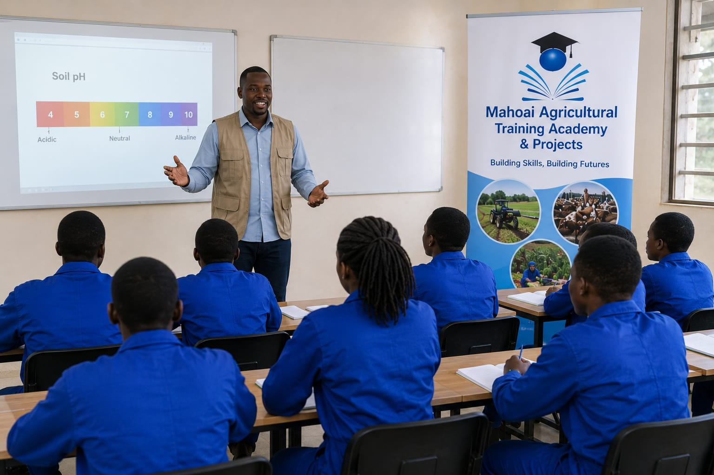

Leading Skills Development & Recruitment Agency in South Africa
Get Started TodayEstablished in 2010, Mahoai Agricultural Training Academy and Projects is a registered and accredited multidisciplinary service provider based in Pretoria, Gauteng, operating nationwide. We are a Level 1 BBBEE company (100% female-owned) founded by a visionary former Tshwane University of Technology agricultural student.
We bridge the gap between education and employment by functioning as a high-impact skills development organisation and a specialised recruitment agency. With a solid history and outstanding record in providing skills development interventions, we ensure that the talent we train is successfully integrated into the workforce.
Delivering outstanding quality in every engagement
Your success is our commitment
Operating with honesty and transparency
Maintaining highest industry standards
To inspire lifelong learning, advance industry knowledge, and empower communities through high-quality education and meaningful job placement.
To be the leading skills development and recruitment organisation in South Africa, contributing to national job security and sustainable business growth.
Comprehensive Solutions for Skills Development & Recruitment
Contact, Online, Hybrid and Distance learning programs aligned with national qualification frameworks
Technical placement and candidate vetting for farming and industrial sectors
Support for small enterprises and community cooperatives
Implementation of learnerships and short skills programs
Workplace Skills Plans and Annual Training Reports with comprehensive audits
Professional accreditation services for training providers
Development and implementation of QMS frameworks
Professional development and career guidance services
Full registration and regulatory compliance support
Direct pathway from training to employment opportunities
Creating Pathways to Success Across South Africa
South Africa faces a critical challenge: while major cities offer diverse skills training programmes, many communities still struggle to access meaningful workforce development opportunities. Inadequate infrastructure, limited accredited training providers, and resource constraints prevent motivated learners from gaining the practical skills needed for employment and economic advancement.

Community halls deliver hands-on instruction to even the most isolated communities, reducing travel costs and barriers to participation.
Collaborations with farms, businesses, and community venues provide relevant workplace experience in familiar environments.
Short modular courses and e-learning platforms accommodate working learners, with offline resources for areas with limited connectivity.
Direct pathways from classroom to sustainable employment, enabling career building without relocating away from support networks.
Learners avoid high relocation costs, remain close to family and support networks, increasing course completion rates and ability to apply skills locally.
Decreased unemployment, increased business productivity, and stimulated entrepreneurship create more resilient, self-sustaining local economies.
Reduced migration pressures on cities, eased strain on urban infrastructure, and more balanced national development across all regions.
Managing Director & Founder
Annah is a visionary leader and former Tshwane University of Technology agricultural student who founded Mahoai Agricultural Training Academy in 2010. With over a decade of experience in skills development and recruitment, she has driven the company to become a Level 1 BBBEE certified, 100% female-owned organisation operating nationwide. Annah's passion for empowering communities and bridging the education-employment gap continues to guide the academy's mission.
Contact:
(073) 726 1432
Info@mahoaiagric.co.za
We'd love to hear from you. Reach out today!
1158B Mocha Section
Mmametlhake
Pretoria, Gauteng
(073) 726 1432
Info@mahoaiagric.co.za